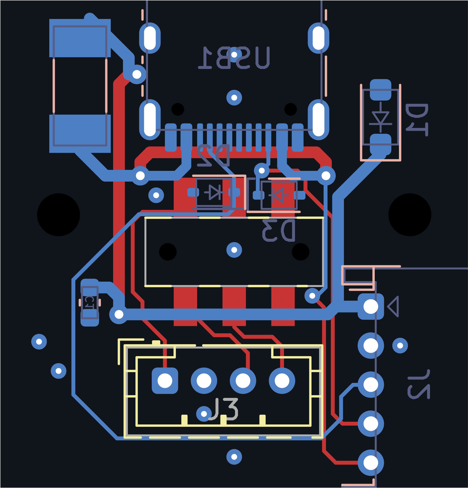
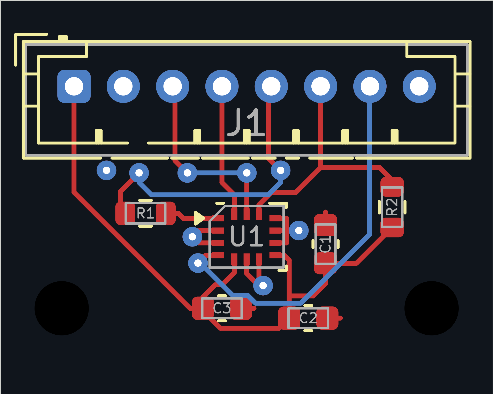
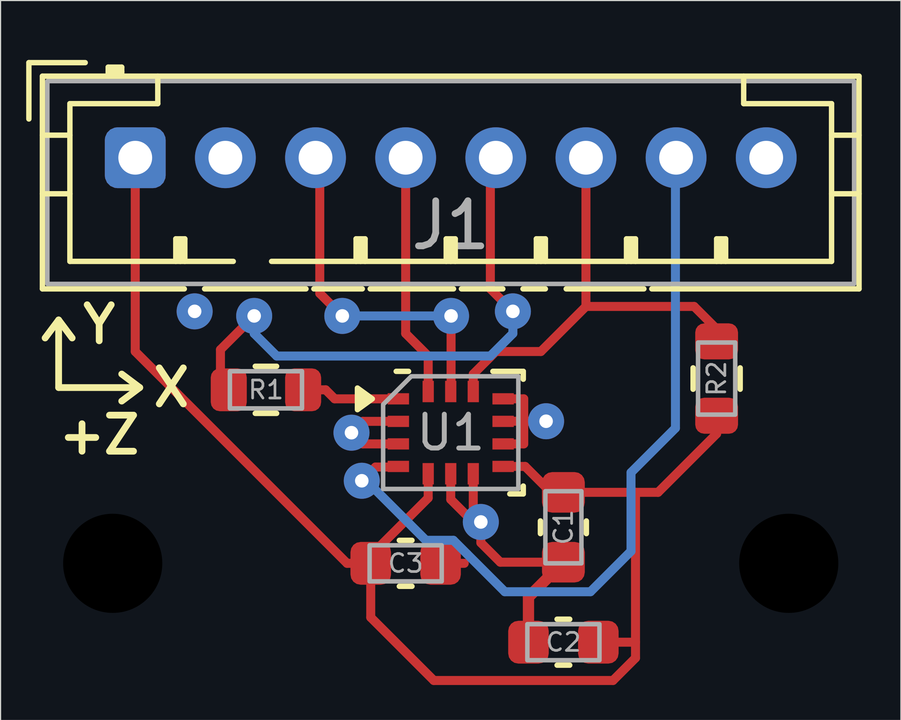

Type-C／电源开关板




点击视图切换；点击图打开可缩放原生 SVG。背面视图保持 PCB 坐标、未镜像。走线对照临时省略填铜，独立地铜图来自实际保存的填充；不把示意图当原生工程。



铜焊盘仍 0.475×0.250mm；最终有效开口 0.4275×0.225mm。KiCad 局部 -5% 每边比例实现 90% 线性尺寸。100µm 厚度的保守矩形释放面积比约0.737，需贴片厂确认；Mask 未改。
下表链接为诊断图；原生图与实际 ERC/DRC 报告在上方。三处严格 R14 倒角例外保留为实际 FAIL；不是所有布线偏好自动通过。
| 板 | 网络 | 总铜线长度 mm | 处理与限制 |
|---|---|---|---|
| rear | /CC1 | 37.76 → 45.73 | D2输出沿左侧/下沿通道到J2.3，为D1/C1重排让出位置；无盲目等长。 |
| rear | /CC2 | 20.33 → 24.02 | D3.1先保护再输出；专项同网旁路检查PASS；(13.25,8.5)保留R14例外。 |
| rear | /CLR_N | 5.66 → 5.66 | 原有SW1/J3.4逻辑回路保留；恢复开关不得自动ARM。 |
| rear | /GND | 0.00 → 7.01 | D3新近端过孔、D2明确地短线、D1外侧倒角和C1地过孔；填铜有效连接已列证据，高频回流未验证。 |
| rear | /LOOP_3V3 | 5.34 → 5.34 | 原有SW1/J3.3逻辑解锁回路保留。 |
| rear | /MASTER_RETURN | 11.74 → 11.74 | 原有SW1→J3.1信号通道保留；非电机电源。 |
| rear | /VBUS_FUSED | 41.37 → 36.70 | F1输出逃线简化；D1移位旋转；主路0.6mm与两颗1/.45过孔；C1支路0.3mm。 |
| rear | /VBUS_RAW | 40.29 → 39.83 | USB右侧汇流过孔上移并重连检测支路；J2.5仍未加源端限流，BLOCKED。 |
| imu | /+3V3 | 26.48 → 32.26 | C1/C2重排，VDD8→C1.1显式路径1.58mm；C3保留。 |
| imu | /CS_N | 9.92 → 9.92 | 原上拉与铜线保持。 |
| imu | /DRDY | 15.72 → 17.44 | 绕至重新摆放C1/C2的外侧；不跨过电容本体。 |
| imu | /GND | 9.24 → 12.76 | C1地在芯片外侧明确连向GND6；C2加入；原LGA两处短转角保留例外。 |
| imu | /MISO | 12.68 → 12.68 | 串阻外侧原走线/换层保持；按实际线束做时序验证。 |
| imu | /MISO_IC | 2.20 → 2.20 | U1到R1近源33Ω保持原铜线，非新加重复串阻。 |
| imu | /MOSI | 5.39 → 5.39 | 原铜线保持；无蛇形等长。 |
| imu | /SCK | 7.81 → 7.81 | 原铜线保持；无蛇形等长。 |
全部线段／UUID · 全部过孔 · 几何提示清单 · CC2无旁路专项检查